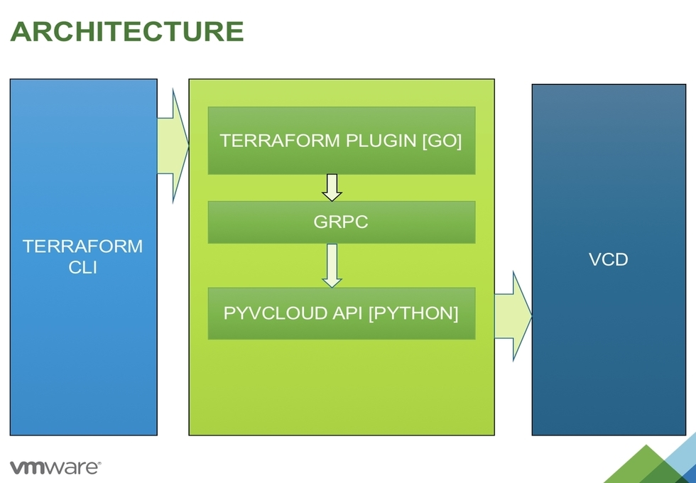

Terraform Provider is a tool which enables operations such as create, update, and delete to improve infrastructure on vCloud Director.
Overview
Terraform is a tool for building, changing, and versioning infrastructure safely and efficiently. Terraform can manage existing and popular service providers as well as custom in-house solutions. Terraform Provider is a tool which is based on Terraform and works with configuration files. These configuration files contain all the information which is relevant enough to perform create/update/read/delete operations on the resources available on vCloud Director.
The current document covers the following Terraform Provider topics:
Terraform Provider Architecture
Terraform Provider has been developed using Python and GO. It uses Client-Server model inside the hood where the client has been written using GO and server has been written using Python language. The core reason to use two different languages is to make a bridge between Terraform and Pyvcloud API. Pyvcloud is the SDK developed by VMware and provides an medium to talk to vCloud Director. Terraform uses GO to communicate where Pyvcloud has been written in Python3.
We are using GRPC Protocol to handle the communication between GO client and Python server.

Installaton and Configuration
- Install Python3.6
wget https://www.python.org/ftp/python/3.6.3/Python-3.6.3.tgz
./configure
make
make install
- Install Python Dependencies
pip3.6 install grpcio
pip3.6 install grpcio-tools
pip3.6 install grpcio_health_checking
pip3.6 install vcd_cli
- Install GO
wget https://storage.googleapis.com/golang/go1.9.linux-amd64.tar.gz
export PATH=/opt/go/bin:$PATH
export GOROOT=/opt/go
export GOPATH=/home/terraform-provider-vcloud-director/go/